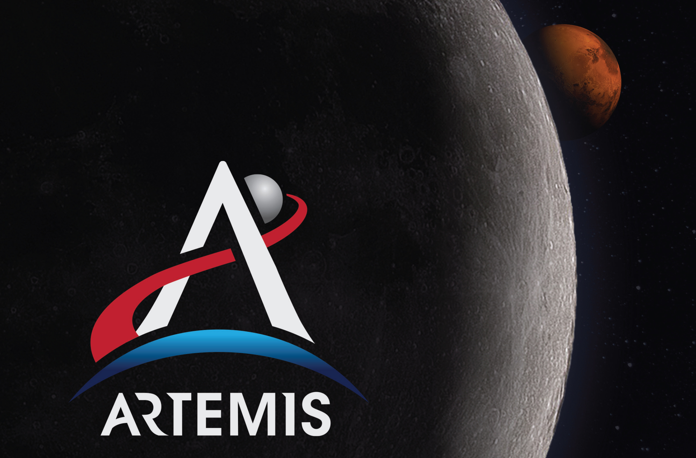
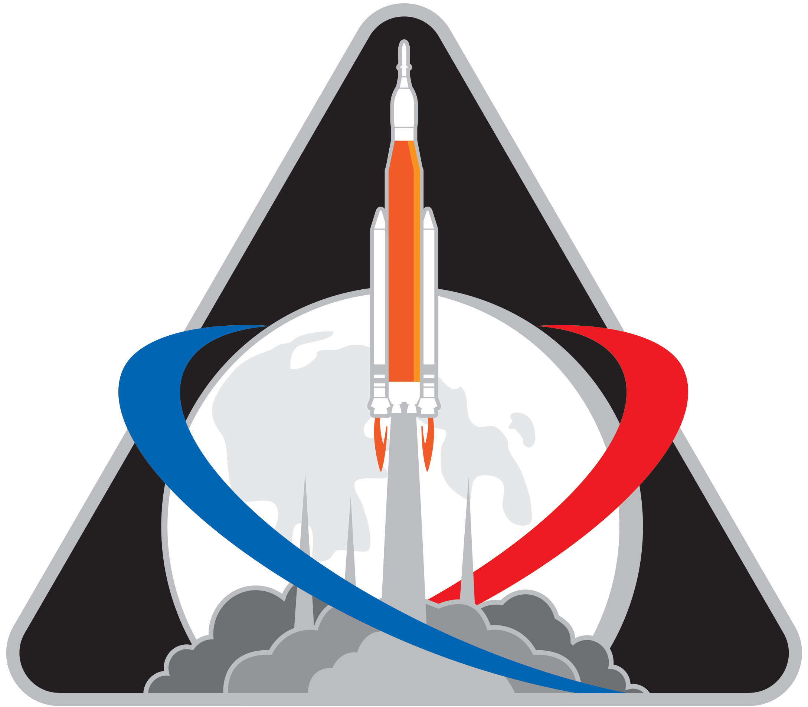
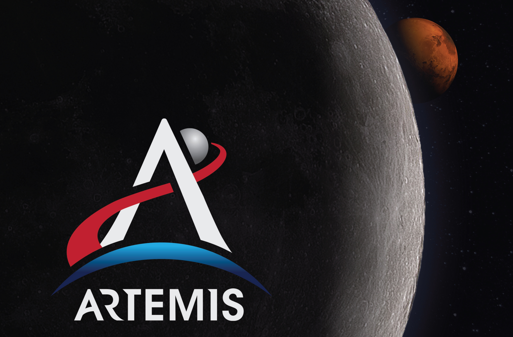
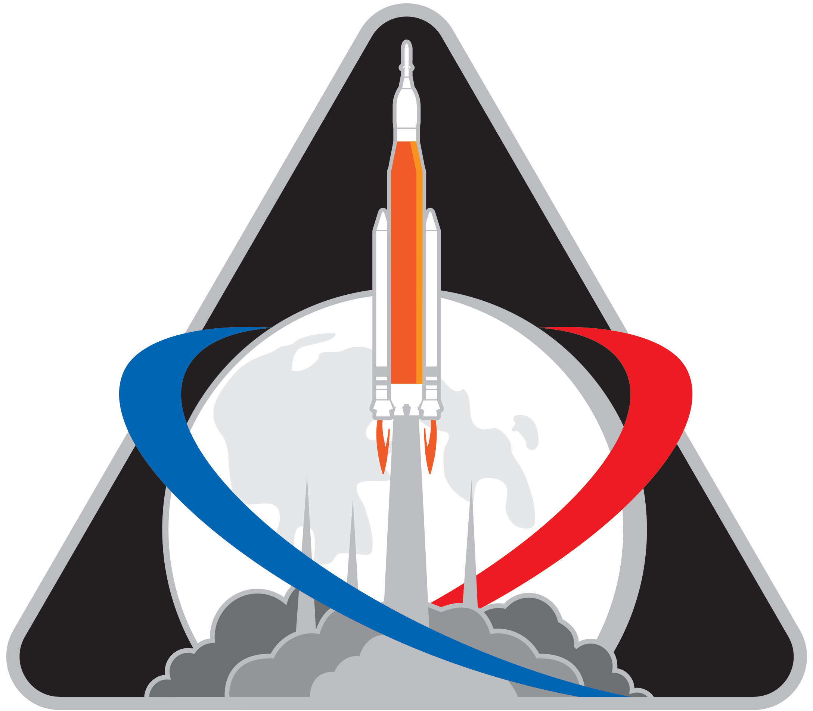

Ludzie od zawsze zastanawiali się czym jest Księżyc, tak jaśnie świecący na nocnym niebie. Pierwsze teorie, jakoby Księżyc miałby być ogromną kulą zrobioną z sera, mimo swojego obiecującego dla charakteru dla mysich mieszkańców naszego globu, okazały się fałszywe. Dziś wiemy, że Księżyc jest naturalnym satelitą Ziemi, który okrąża ją w ciągu 27,3 dni, pozostając w odległości ok. 380 000 km od jej powierzchni. Jako pierwsza na Księżycu wylądowała radziecka sonda Łuna 2 w 1959 roku. 10 lat później - w 1969 roku - w ramach misji Apollo 11 odbyło się pierwsze lądowanie człowieka na naszym satelicie. Wtedy właśnie Neil Armstrong i Buzz Aldrin jako pierwsi postawili stopę na ciele niebieskim niebędącym Ziemią. Jak powiedział ten pierwszy - był to „mały krok dla człowieka, ale wielki skok dla ludzkości”. Ostatnia załogowa misja na Księżyc - Apollo 17 - odbyła się w 1972 roku, czyli prawie 50 lat temu. Dziś słyszymy jednak o programie Artemis, planującym powrót ludzi na naszego satelitę, jak i również o przyszłej kolonizacji Księżyca. Jestem niezwykle szczęśliwy słysząc o takich planach, kolonizacja naszego satelity jest bowiem następnym, niezbędnym krokiem na ludzkiej drodze rozwoju.
Myśl, że ludzi nie było na Księżycu przez poprzednie 50 lat jest niezwykle przygnębiające. Nie sposób oprzeć się wrażeniu, że nie poczyniliśmy przez ten czas żadnego postępu na drodze eksploracji kosmosu. Misje kosmiczne z ubiegłego wieku, których owocem było wysłanie pierwszego człowieka poza naszą planetę - Jurija Gagarina - przez ZSRR w 1961 roku oraz, 8 lat później, wbicie flagi amerykańskiej w powierzchnię Księżyca przez Neila Armstronga i Buzza Aldrina, były napędzane zimną wojną prowadzoną przez te państwa. Oczywistością jest, że rywalizacja napędza ludzi do rozwoju, gdy jednak jej brakuje wydaje się, że niejako obalamy się, nie czyniąc żadnych postępów. Oczywiście nie jest to prawdą, gdyż te 50 lat nie było całkowicie straconymi. Poczyniliśmy przez nie ogromny postęp technologiczny i dziś posiadamy o wiele lepsze środki do dalszej eksploracji kosmosu. Co ciekawe, telefon, który na codzień nosisz w kieszeni swoich spodni, posiada większą moc obliczeniową niż wszystkie komputery użyte przez NASA do wysłania człowieka na księżyc. Wielkim skokiem poczynionym przez ludzkość na przestrzeni tych 50 lat było również wyniesienie na orbitę ISS - Międzynarodowej Stacji Kosmicznej, która postała w 1998 roku. Mimo tych imponujących osiągnięć cały czas można odczuć pewną pustkę, wynikającą z pewnego braku praktycznego wykorzystania współczesnych możliwości. Przykładowo nadal nie posiadamy bazy na Księżycu, ani żaden człowiek nie postawił jeszcze stopy na Marsie. Na szczęście widać światełko w tunelu dla przemysłu kosmicznego.
26 marca ubiegłego roku NASA przedstawiła projekt Artemis*, którego celem jest wysłanie dwóch kolejnych osób na Księżyc. Pierwsza misja programu Artemis - Artemis 1 na odbyć się już w bieżącym roku. Będzie to misja bezzałogowa, a jej celem jest wyniesienia pojazdu kosmicznego Orion na orbitę wokółksiężycową za pomocą rakiety SLS, której będzie to pierwszy lot. Statek następnie pozostanie na orbicie przez następne 6 dni. Artemis 2 będzie natomiast misją załogową, która planowana jest na 2022 rok. Jej celem będzie wyniesienie czwórki astronautów na orbitę Księżyca na pokładzie statku Orion, gdzie spędzą oni nawet do 21 dni. Następnym etapem jest misja Artemis 3, która ma się odbyć w 2024 roku. Jej celem jest wysłanie dwójki astronautów - kobiety i mężczyzny na powierzenie naszego satelity. Mają oni spędzić tam następnie sześć i pół dnia. W tym celu na orbitę okołoksiężycową ma zostać wysłana baza Lunar Geteway (Brama), której budowa planowana jest już na ten rok. Ma ona stanowić bazę wypadową, na której mogłoby stacjonować do 4 astronautów. Ma ona odegrać ważną rolę w dalszej części programu Artemis. Głównym celem programu, obok wysłania pierwszej kobiety na Księżyc, jest założenie bazy na na naszym stelicie, która byłaby pierwszym przytułkiem ludzkości poza naszą macierzystą planetą. Uważam, że jest to coś naprawdę niesamowitego. Co warte uwagi, podczas gdy załogi dawnych programów kosmicznych złożone były głównie z wojskowych, astronauci Artemis będą w większości naukowcami. Mają oni sprawdzić obecność wody na Księżycu, której obecność w postaci stałej została zaobserwowana na jego zimnych biegunach, co, obok dostępu do światła słonecznego, czyni z bieguna południowego Księżyca miejsce docelowe programu. Będzie ona niezbędna jeżeli chcemy osiedlić się na powierzchni naszego satelity.


Amerykanie planują zacząć budowę bazy na Księżycu w ramach projektu Artemis w 2028 roku. Natomiast na rok 2030 Rosjanie zapowiedzieli budowę swojej bazy. SpaceX także zapowiedziało stworzenie własnej, niezależnej placówki. Również Japonia i Chiny są zainteresowane Księżycem, a swoje misje mające na celu lądowanie na Księżycu zapowiedzieli na kolejno 2030 i 2036 rok. Fundacja Open Lunar w 2019 roku także zaproponowała stworzenie otwartej, globalnej osady na Księżycu, z której korzystać mogłyby wszystkie narody. Widać więc spore zainteresowanie naszym satelitą z wielu stron. Budowa bazy na Księżycu nie będzie jednak taka prosta. Temperatura na naszym satelicie wynosi od -180 C do 110 C, jak i również atmosfera Księżyca nie chroni przed promieniowaniem kosmicznym. Baza również musiałaby znajdować się w pobliżu kraterów wypełnionych lodem wodnym, w celu produkcji wody pitnej, jak i również prowadzenia agrokultury i produkcja paliwa rakietowego z wodoru. Baza księżycowa stanowiłaby jednak cenne miejsce do przeprowadzania eksperymentów, potrzebnych do planowania przyszłych misji na Marsa. Mogłaby ona również stanowić placówkę przejściową do wysyłania statków w dalsze misje, z lokalnie wyprodukowanym paliwem, jako iż grawitacja Księżyca jest mniejsza od ziemskiej. Księżyc jest również bogaty z złoża metali, takich jak złoto, tytan, czy uran. Pierwszymi mieszkańcami Księżyca będą naukowcy i inżynierowie, badający jego powierzchnię, rozbudowujący kolonię i przeprowadzający doświadczenia. Z czasem jednak, gdy osada księżycowa będzie się rozrastać, zaczną ją zamieszkiwać zwykli ludzie. Księżyc przestanie być więc jedynie obiektem obserwowanym przez ludzi na nocnym niebie, a zacznie być pełnoprawnym miejscem osiedlenia ludzi.
Księżyc jest najbliższym nam ciałem niebieskim. Jego kolonizacja, poza widocznymi korzyściami, powinna być pierwszym krokiem na naszej drodze do kosmicznej ekspansji. Jesteśmy dominującym gatunkiem na naszej małej planecie, nie ma na Ziemi miejsca, w którym nie stanęła by stopa człowieka. Naturalnym dla nas, ludzi, jest rozwój naszej cywilizacji. Gdy opanowaliśmy już naszą planetę, może wydawać nam się, że osiągnęliśmy już wszystko. Jedno spojrzenie w nocne niebo może nas jednak przekonać w jak wielkim błędzie jesteśmy. Nad nami znajduje się ogrom całego Wszechświata, który czeka otworem na nasze przybycie. Tak jak kiedyś przemieszczaliśmy się po Ziemi, osiedlając się w nowych miejscach i w efekcie tworząc ogólnoziemską cywilizację, tak teraz powinniśmy zwrócić nasze oczy w kierunku tych jeszcze nieodkrytych, nie lądów, a całych pięknych światów i pamiętając myśl, wiodącą nas ku poznawaniu świata, kolonizować je, by w efekcie utworzyć cywilizację nie ziemską, a międzyplanetarną, a może nawet galaktyczną. Księżyc jest więc pierwszym, niezbędnym przystankiem na tej pięknej drodze ludzkiego poznania Wszechświata. To właśnie w nim znajduje się nasza przyszłość. Przyszłość rodem z science fiction. Przyszłość, która jest na wyciągnięcie ręki. Musimy zrobić tylko ten jeden krok, krok który będzie wielkim skokiem w przyszłość dla całej Ludzkości.
*Nazwa projektu ma nawiązywać do projektu Apollo, który jako pierwszy doniósł człowieka na Księżyc. Według mitologii greckiej Artemida (Artemis) była bliźniaczą siostrą Apolla.
IN
26 marca ubiegłego roku NASA przedstawiła projekt Artemis*, którego celem jest wysłanie dwóch kolejnych osób na Księżyc. Pierwsza misja programu Artemis - Artemis 1 na odbyć się już w bieżącym roku. Będzie to misja bezzałogowa, a jej celem jest wyniesienia pojazdu kosmicznego Orion na orbitę wokółksiężycową za pomocą rakiety SLS, której będzie to pierwszy lot. Statek następnie pozostanie na orbicie przez następne 6 dni. Artemis 2 będzie natomiast misją załogową, która planowana jest na 2022 rok. Jej celem będzie wyniesienie czwórki astronautów na orbitę Księżyca na pokładzie statku Orion, gdzie spędzą oni nawet do 21 dni. Następnym etapem jest misja Artemis 3, która ma się odbyć w 2024 roku. Jej celem jest wysłanie dwójki astronautów - kobiety i mężczyzny na powierzenie naszego satelity. Mają oni spędzić tam następnie sześć i pół dnia. W tym celu na orbitę okołoksiężycową ma zostać wysłana baza Lunar Geteway (Brama), której budowa planowana jest już na ten rok. Ma ona stanowić bazę wypadową, na której mogłoby stacjonować do 4 astronautów. Ma ona odegrać ważną rolę w dalszej części programu Artemis. Głównym celem programu, obok wysłania pierwszej kobiety na Księżyc, jest założenie bazy na na naszym stelicie, która byłaby pierwszym przytułkiem ludzkości poza naszą macierzystą planetą. Uważam, że jest to coś naprawdę niesamowitego. Co warte uwagi, podczas gdy załogi dawnych programów kosmicznych złożone były głównie z wojskowych, astronauci Artemis będą w większości naukowcami. Mają oni sprawdzić obecność wody na Księżycu, której obecność w postaci stałej została zaobserwowana na jego zimnych biegunach, co, obok dostępu do światła słonecznego, czyni z bieguna południowego Księżyca miejsce docelowe programu. Będzie ona niezbędna jeżeli chcemy osiedlić się na powierzchni naszego satelity.

logo programu Artemis

logo misji Artemis 1
Amerykanie planują zacząć budowę bazy na Księżycu w ramach projektu Artemis w 2028 roku. Natomiast na rok 2030 Rosjanie zapowiedzieli budowę swojej bazy. SpaceX także zapowiedziało stworzenie własnej, niezależnej placówki. Również Japonia i Chiny są zainteresowane Księżycem, a swoje misje mające na celu lądowanie na Księżycu zapowiedzieli na kolejno 2030 i 2036 rok. Fundacja Open Lunar w 2019 roku także zaproponowała stworzenie otwartej, globalnej osady na Księżycu, z której korzystać mogłyby wszystkie narody. Widać więc spore zainteresowanie naszym satelitą z wielu stron. Budowa bazy na Księżycu nie będzie jednak taka prosta. Temperatura na naszym satelicie wynosi od -180 C do 110 C, jak i również atmosfera Księżyca nie chroni przed promieniowaniem kosmicznym. Baza również musiałaby znajdować się w pobliżu kraterów wypełnionych lodem wodnym, w celu produkcji wody pitnej, jak i również prowadzenia agrokultury i produkcja paliwa rakietowego z wodoru. Baza księżycowa stanowiłaby jednak cenne miejsce do przeprowadzania eksperymentów, potrzebnych do planowania przyszłych misji na Marsa. Mogłaby ona również stanowić placówkę przejściową do wysyłania statków w dalsze misje, z lokalnie wyprodukowanym paliwem, jako iż grawitacja Księżyca jest mniejsza od ziemskiej. Księżyc jest również bogaty z złoża metali, takich jak złoto, tytan, czy uran. Pierwszymi mieszkańcami Księżyca będą naukowcy i inżynierowie, badający jego powierzchnię, rozbudowujący kolonię i przeprowadzający doświadczenia. Z czasem jednak, gdy osada księżycowa będzie się rozrastać, zaczną ją zamieszkiwać zwykli ludzie. Księżyc przestanie być więc jedynie obiektem obserwowanym przez ludzi na nocnym niebie, a zacznie być pełnoprawnym miejscem osiedlenia ludzi.
Księżyc jest najbliższym nam ciałem niebieskim. Jego kolonizacja, poza widocznymi korzyściami, powinna być pierwszym krokiem na naszej drodze do kosmicznej ekspansji. Jesteśmy dominującym gatunkiem na naszej małej planecie, nie ma na Ziemi miejsca, w którym nie stanęła by stopa człowieka. Naturalnym dla nas, ludzi, jest rozwój naszej cywilizacji. Gdy opanowaliśmy już naszą planetę, może wydawać nam się, że osiągnęliśmy już wszystko. Jedno spojrzenie w nocne niebo może nas jednak przekonać w jak wielkim błędzie jesteśmy. Nad nami znajduje się ogrom całego Wszechświata, który czeka otworem na nasze przybycie. Tak jak kiedyś przemieszczaliśmy się po Ziemi, osiedlając się w nowych miejscach i w efekcie tworząc ogólnoziemską cywilizację, tak teraz powinniśmy zwrócić nasze oczy w kierunku tych jeszcze nieodkrytych, nie lądów, a całych pięknych światów i pamiętając myśl, wiodącą nas ku poznawaniu świata, kolonizować je, by w efekcie utworzyć cywilizację nie ziemską, a międzyplanetarną, a może nawet galaktyczną. Księżyc jest więc pierwszym, niezbędnym przystankiem na tej pięknej drodze ludzkiego poznania Wszechświata. To właśnie w nim znajduje się nasza przyszłość. Przyszłość rodem z science fiction. Przyszłość, która jest na wyciągnięcie ręki. Musimy zrobić tylko ten jeden krok, krok który będzie wielkim skokiem w przyszłość dla całej Ludzkości.
*Nazwa projektu ma nawiązywać do projektu Apollo, który jako pierwszy doniósł człowieka na Księżyc. Według mitologii greckiej Artemida (Artemis) była bliźniaczą siostrą Apolla.
IN